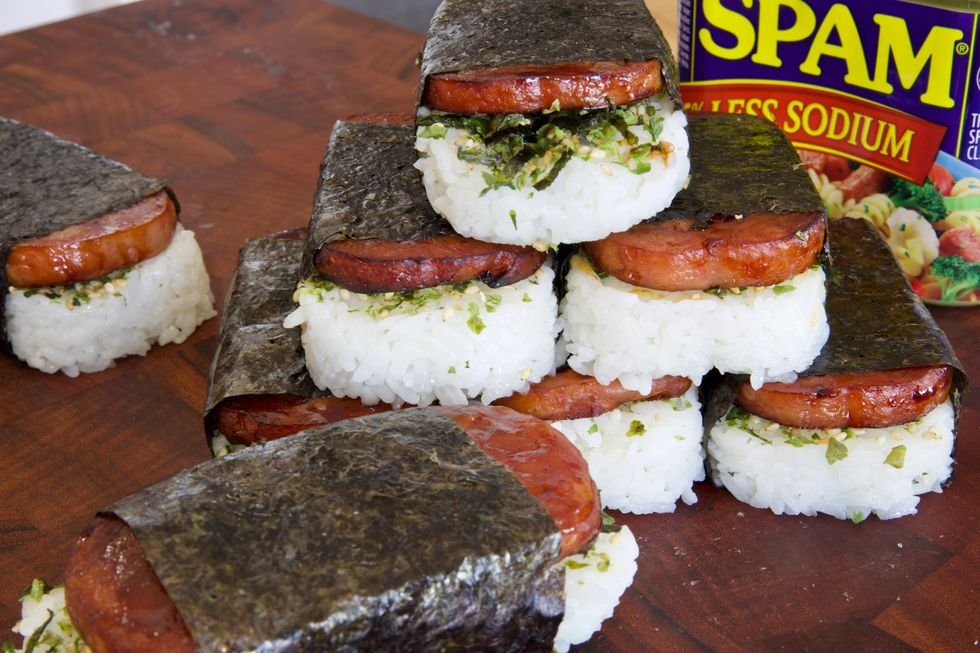

Spam Musubi Recipe

Spam musubi is a popular Hawaiian snack. It's typically made with short grain rice and grilled teriyaki-marinated Spam,
sprinkled with furikake—a Japanese seaweed seasoning—and wrapped in nori.
You'll find many variations on musubi with different fillings, flavorings,
and proteins: some even deep fry the whole package.
This easy take is a perfect for picnics, beach hangs, or an afternoon snack.
Ingredients
- Spam
- Soy Sauce
- Mirin
- Sugar
- Nori
- Furikake seasoning
- Rice
Steps
- Remove Spam from the can. Cut the spam into equal lenghwise pieces
and place them into a bowl. Marinate the spam with soy sauce, sugar, and mirin.
Set it out to marinate for at least 15 minutes.
- Heat up the frying pan. Once hot enough, place the spam in the pan and cook until
glazed and warmed through on each side for about 5 minutes
- Rinse the rice three times under cool water. Combine equal ratio of rice to water and then place
in rice cooker to leave to cook.
- Place the Spam Musubi mold on top of the Nori (They should be perpendicular to each other.
Add rice then a slice of spam. Apply slight pressure with the Musubi mold. Once it is completely set
, slowly lift up the Musubi mold and carefully wrap it with the nori. Dampen one end of the nori and
press to seal.
Return to main page